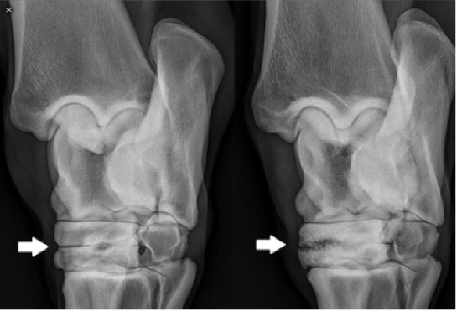

LESIONES DE CORVAS
En Caballos Chilenos
Dr. Raúl Franco Ledesma
Durante muchos años se pensaba que las lesión más preponderante importante que presentaban los Caballos Chilenos era
la Enfermedad Navicular (Caldeadura) Síndrome Navicular.
Esta, si bien sigue siendo una patología de relevancia en las
enfermedades que afectan a esta raza, su presentación ha disminuido significativamente. Esto se debe a que ha habido un
gran mejoramiento de las técnicas de herraje, materiales de
herraje y el profesionalismo de los herreros, disminuyendo así
una de las principales causas del Síndrome Navicular en los caballos chilenos
En la actualidad las patologías o lesiones de las Corvas (tarsos)
han tomado una gran importancia y relevancia clínica en los caballos chilenos que compiten en rodeos, no solamente por qué
causan claudicaciones de diversos grados, sino que también
por que producen una gran disminución en las capacidades
deportivas y una baja en la perfomance
Al parecer las causas más importante del desarrollo de estas
patologías en los caballos adultos que están en trabajo y/o en
competencia, como en los que se encuentran en las distintas
etapas de su enseñanza deportiva, sería la carga e intensidad de trabajo a la que son sometidos los miembros posteriores durante el ejercicio y/o en la competencia
La compresión, la rotación, el deslizamiento con esfuerzo
debido a un movimiento asincrónico de los huesos tarsianos y la
tensión excesiva sobre las inserciones de los ligamentos dorsales principales son importantes para el desarrollo de la enfermedad tarsiana
Durante el galope o trote en postura, la posición, la fuerza y el
desplazamiento a la que son sometidos los miembros posteriores, en especial las corvas, hacen que estas articulaciones sean
sometidas a grandes fuerzas, lo que también ocurre durante la
carrera en postura, preparación de la atajada y al momento de
atajar. Estas posiciones anormales y fuerzas excesivas a las que
son sometidas las corvas son factores preponderantes para el
desarrollo de estas patologías.
También la osteoartrosis tarsiana distal se asocia a una mala
conformación. Los caballos sentados de corvejones o con corvejones de vaca están predispuestos a desarrollar la enfermedad. Estas conformaciones producen un gran estrés sobre la
cara medial de la articulación del tarso. Los caballos que desarrollan esta enfermedad ocurren debido a un gran componente
hereditario.
Las enfermedades de las corvas pueden estar presentes desde
temprana edad (potrillos) y pueden ser parte de las enfermedades óseas del crecimiento, donde la Osteocondritis y el colapso
de los huesos cuboides del tarso tienen gran importancia. También las patologías asociadas a infecciones del cordón umbilical
pueden llegar a producir poliartritis infecciosa y afectaría directamente a las articulaciones del tarso produciéndose una pérdida total del cartílago articular y una posterior anquilosis de éstas
articulaciones

El diagnóstico de estas patologías se realiza en base al
examen clínico tanto en la estación como en movimiento, bloqueos anestésicos, estudios por imágenes como Radiografías,
Ecografias, Tomografías, Resonancia Magnética, Cintigrafía,
Tomografía Computarizada y también a través de un procedimiento quirúrgico que es la artroscopia; examen que puede
examinar directamente el estado articular.
Las enfermedades más comunes de las corvas son, Artritis, Tarsitis distal, Enfermedad degenerativa articular (osteoartritis o
esparaván), patología de mayor prevalencia, Hidrartrosis del
carso, Bursitis de tarso traumática (campanas), tenosinovitis de
la vaina tarsiana, luxación del tendón flexor superficial. También están las enfermedades óseas del desarrollo que afectan
a los potrillos y en caballos en crecimiento siendo la más importante la Osteocondrosis y el colapso de los huesos cuboides del tarso. Se ha descrito artritis en estas articulaciones tarsianas en las distintas etapas del crecimiento de los potrillos.
Los tratamientos para las distintas patologías del tarso varían
desde la medicamentación sistémica en base a drogas antiinflamatorias, aplicación de Frio, administración oral de glucosamina, condroitina y ácido hialurónico, Cambio de herrajes, cirugías artroscópicas y fisioterapia.
Las infiltraciones de estas articulaciones tarsianas y/o de sus
tejidos periarticulares son el tratamiento más popular. Esto se
realiza inyectando distintos fármacos en la o las articulaciones
y/o en los tejidos periarticulares, en base a antiinflamatorios
esteroidales de distintas potencias y duraciones, ácido hialurónico de distintos pesos moleculares y potencias, lo que llevaría
a diferentes resultados terapéuticos. También glicosaminoglicanos, suero autólogo acondicionado (IRAP) que es recomendado para casos de enfermedad articular degenerativa de
baja a mediana gravedad y que son refractarios al uso de corticoides.
Además existen otros procedimientos farmacológicos que
llevan a estabilizar y desinflamar las estructuras articulares disminuyendo o suprimiendo el dolor articular y el deterioro del
cartílago articular. Esto permite que un alto porcentaje de caballos lesionados vuelvan al trabajo y a la competencia, mejorando su performance deportivo.
El pronóstico depende de la gravedad de las lesiones presentes o de las diversas patologías existentes, por lo general estas
lesiones articulares en un alto porcentaje responden bien a los
tratamientos, estabilizando las lesiones articulares, mejorando
la funcionalidad articular y en muchos casos el performance
deportivo.
Es importante comprender que estas enfermedades degenerativas articulares (osteoartritis) sólo se pueden estabilizar, disminuir el daño progresivo de la articulación, lo que se traduce
en una disminución del dolor y de la rigidez articular. Esto se
logra a través de tratamientos adecuados y se debe asociar
con una disminución o bien eliminación de los factores causales, donde el herraje y el cambio de trabajo del caballo tanto
en calidad como en intensidad tienen gran relevancia.